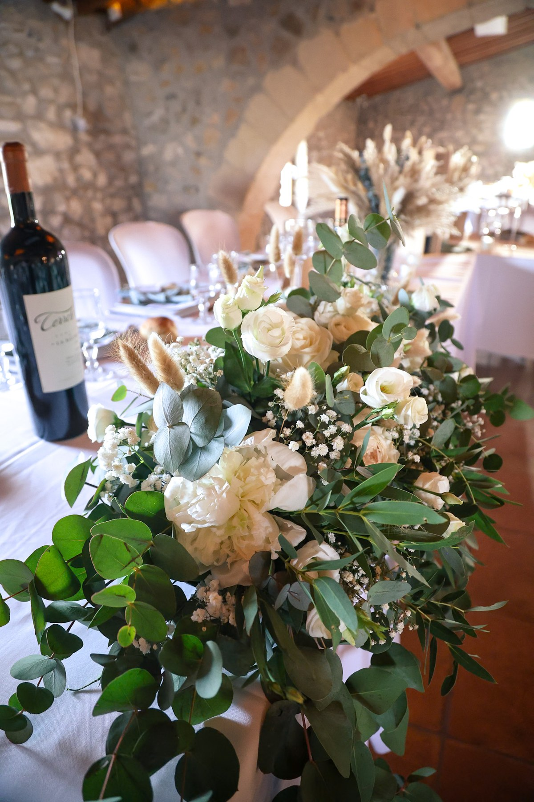

Pour moi, être DJ, ce n’est pas simplement enchaîner des morceaux. C’est sentir une salle, capter une énergie, trouver le bon son au bon moment. Celui qui fait se lever les premiers invités, celui que tout le monde reprend ensemble, celui qui finit par remplir la piste sans qu’on ait besoin de forcer quoi que ce soit.
J’accompagne chaque événement avec cette même envie : créer une ambiance qui vous ressemble vraiment.
Mariage, anniversaire, soirée privée ou événement d’entreprise, chaque soirée a sa propre énergie et c’est justement ce que j’aime dans ce métier. Être présent sans prendre toute la place, soigner chaque moment et laisser la musique faire son travail.
Et quand plus personne n’a envie de quitter la piste, je sais pourquoi je fais ce métier.
Thibaut Tauleigne
6années de musique depuis 2020
20+mariages accompagnés en 2025
PRESTATIONS
QU’EST-CE QU’ON fête ?

LE JOUR QUI VOUS RESSEMBLE
TOUT DOIT ÊTRE PARFAIT !Du vin d’honneur au dernier morceau
Il y a les moments qu’on avait prévus… et ceux qu’on n’oubliera jamais
Une entrée qui donne le ton, un discours qui fait rire toute la salle, une ouverture de bal, puis ce moment où tout le monde finit sur la piste. Sibel accompagne et anime votre soirée du début à la fin, avec la musique, le son, la lumière et les interventions nécessaires pour faire vivre chaque temps fort.
Pas de micro à outrance, pas d’animation forcée : juste ce qu’il faut pour donner du rythme, créer du lien et laisser la soirée prendre toute son énergie.
Un anniversaire, une fête de famille, une soirée entre amis… peu importe l’occasion, l’idée reste la même : réunir les bonnes personnes, au bon endroit, avec la bonne ambiance.
Sibel s’adapte à votre soirée, à vos invités et surtout à l’énergie du moment. Musique, animation, son et lumière se construisent avec vous pour créer quelque chose de fluide, naturel et vraiment à votre image.
L’objectif est simple : que tout le monde ait envie de rester encore un peu.
Un discours qui rassemble, un verre partagé entre collègues, puis ce moment où les conversations laissent place à la fête. Un événement d’entreprise, c’est aussi l’occasion de se retrouver autrement.
Soirée d’équipe, inauguration ou anniversaire d’entreprise : Sibel prépare avec vous chaque temps fort. Une prise de parole bien sonorisée, une lumière qui transforme le lieu, la bonne musique pour passer du cocktail à la piste… tout s’accorde pour que votre événement se vive naturellement.
Une présence attentive, de l’animation quand il en faut et le plaisir de partager un vrai moment ensemble. Le reste, ce sont les souvenirs que votre équipe emporte.
Une organisation soignée, des équipements professionnels et une animation adaptée : chaque détail compte pour vous faire vivre une soirée fluide et réussie.
Un son à la hauteur
Sonorisation professionnelle et cabine DJ pour accompagner la réception.
La lumière donne le ton
Éclairage de salle, lumières vintage et deux monotubes équipés de deux lyres et d’un Sunstrip.
Vos souvenirs en grand
Un vidéoprojecteur figure dans la prestation. Les contenus et les conditions de projection se préparent avec votre DJ.
Et pour votre touche personnelle…
EN OPTION
Vinyl Bar
Le charme du disque et d’un meuble dédié, pour un moment musical à part dans votre événement.
Dans ma demandeEN OPTION
Cérémonie laïque
Une option dédiée à votre cérémonie, à préparer avec votre DJ selon le lieu et le déroulé.
Dans ma demandeEN OPTION
Étincelles froides
Une touche spectaculaire pour un temps fort, selon les possibilités et les règles du lieu.
Dans ma demandeEN OPTION
Borne photo
200 tirages pour vos invités et un lien vers le cloud pour retrouver les images.
Dans ma demande
Le Vinyl Bar, la cérémonie laïque, les étincelles froides et la borne photo sont des options à choisir en complément de votre prestation DJ.
L’ACCOMPAGNEMENT
LA SPONTANÉITÉ se prépare
Un seul interlocuteur, une écoute attentive et une préparation à votre image : avec Sibel, vous savez avec qui vous construisez votre événement.
Les musiques qui vous ressemblent, les titres que vous préférez éviter et l’ambiance que vous imaginez : tout commence par vous écouter.
Un échange direct avec Thibaut
De la préparation à votre événement, vous échangez avec le DJ qui sera à vos côtés. Les choix se construisent ensemble, selon votre lieu et votre projet.
Présent au bon moment
Accompagner les temps forts, laisser de la place aux émotions et sentir quand la piste est prête : une présence attentive, sans prendre toute la place.
LES INSTANTS SIBEL
ÇA VIBRE Ça reste
Un coup d’œil en images pour replonger dans l’énergie de ces soirées. Pour les coulisses et les formats vidéo, rendez-vous sur Instagram
“
LES MOTS QUI RESTENT
Après la dernière chanson, il reste les souvenirs
Découvrez les retours des couples qui ont confié leur mariage à Sibel Events.